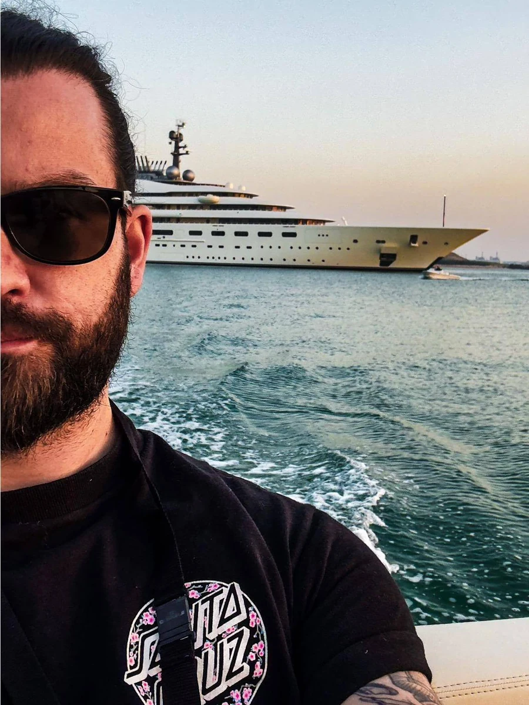

Restless & Wild
Engineer, consultant and filmmaker with one foot always in salt water. I help private boat owners with electronics, restorations and film production that moves people. Superyacht-grade standards, applied to your boat.
What I Do
3 DisciplinesMarine Electrics & Schematics
NMEA 2000 networks, wiring diagrams and onboard electrics — planning, schematic creation and troubleshooting for private boat owners.
Restoration & Mechanics
Hands-on experience restoring boats from the hull up — engines, mechanics and paintwork. Consulting for owners tackling their own refit.
Cinematography & Film Production
Director of photography and producer for films built to move people — from concept and camera through to color.
Film Work
2 FeaturedA few more productions — reel available on request.
About
Max Schmidt, B.Eng
"I create films to make people feel something." — restless and wild.
The sea got me before the camera did.
My life always revolved around old Detroit steel and boat engines, and somewhere between shooting my first short film and restoring my fifth boat I realized both come from the same instinct: take something apart, understand it completely, and put it back together better than you found it. For more than ten years I've worked across radio production, engineering, live events and film — and today as an engineer commissioning AV, IT and satellite systems on some of the largest yachts in the world. Different mediums, same question: how does this actually work, and how do I make it work beautifully. Off the job site I'm usually elbow-deep in an engine bay or out on the water.
Film and boats are pure art in different materials — technology and craft combined to make something that moves you, whether it runs on fuel or timecode.
Let's talk.
Selectively available for consulting and film projects alongside my full-time work.